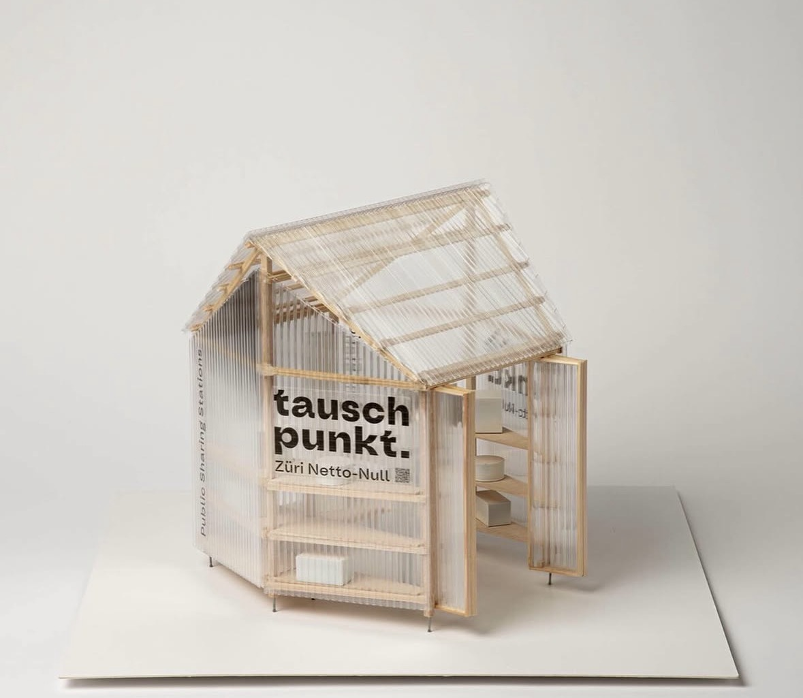
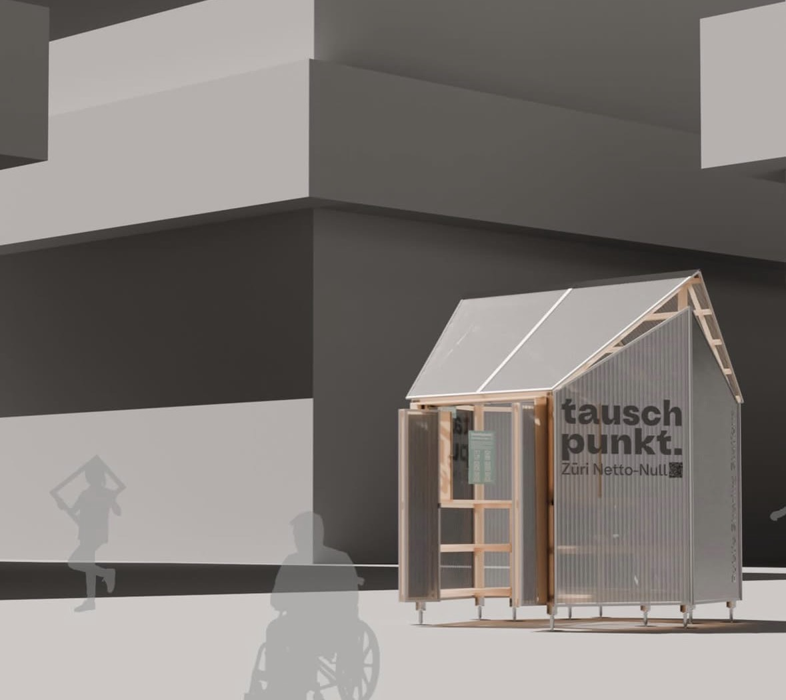
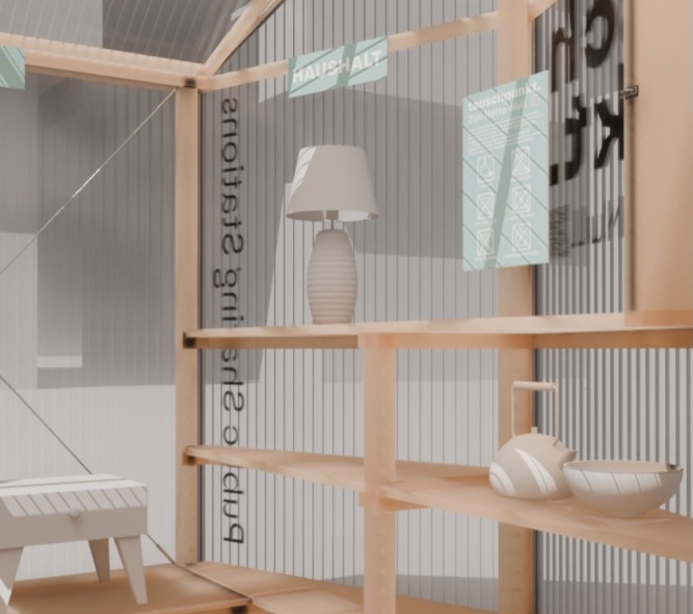
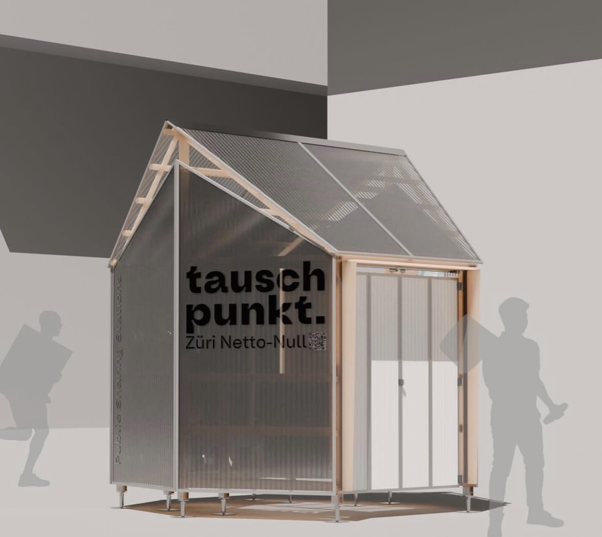

Zukunft
Beleben.
Wir gestalten den Stadtraum in Zürich Wiedikon/Binz neu. Entdecke Initiativen für ein klimaneutrales und lebendiges Quartier.
tauschpunkt.
Teilen statt Besitzen. Ein Hub für Kreislaufwirtschaft und sozialen Austausch direkt im Quartier.
Playground
Binzallee
Klimaresiliente Umgestaltung eines versiegelten Innenhofs durch Begrünung, Schatten und Sportangebote.
tauschpunkt. Züri Netto-Null
Der „tauschpunkt.“ ist mehr als ein Regal – er ist ein sichtbares Zeichen für Nachhaltigkeit. Hier zirkulieren Gegenstände des täglichen Gebrauchs, was Ressourcen schont und CO2-Emissionen reduziert.
Die Station (ca. 5x3m) wird aus Holz und lichtdurchlässigen Stegplatten gefertigt. Sie dient als Treffpunkt, der das Bewusstsein für die Netto-Null Ziele der Stadt Zürich schärft.
- Dimension: 5.0 x 3.0 Meter
- Bauweise: Modulare Holzstruktur
- Fokus: Sharing & Nachbarschaftshilfe




Playground Binzallee.
Wir verwandeln einen versiegelten Hof in einen „klimaaktiven Stadtraum“. Das Herzstück ist eine schwebende Begrünungsstruktur auf 6-7m Höhe, die eine natürliche „grüne Decke“ bildet.
Diese sorgt für Schatten und Verdunstungskühlung, während helle Bodenbeläge und Nutzungen wie Basketball, Boccia oder Schach den Raum für alle Generationen beleben.
- Kühlung: Reduktion der Hitzeinsel-Effekte
- Aktivität: Basketball, Boccia & Schach
- Natur: Horizontale Kletterpflanzen-Systeme


Über uns.
Simon
blablablablabla
ColorUP CornerZH
blablablablabla